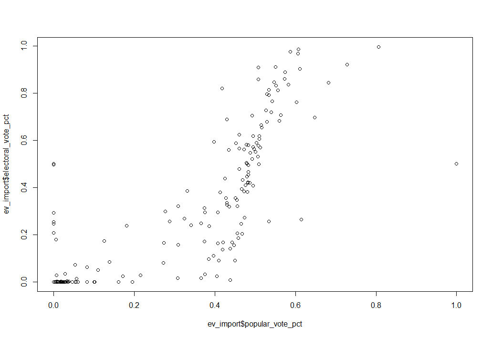
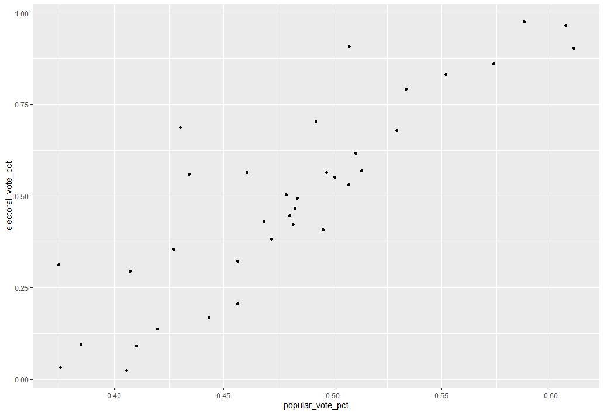

Editor’s note: I’ve gone back & read my previous post, & have one general thought - yeeeesh… Everything is so… “matter of fact” in tone & doesn’t really sound like me. I’ll give myself a pass, since it was the first post, was written around midnight (which is very late for me!), and probably won’t ever be read by anyone besides me/my mom (hi mom!). That being said, I’m going to try to make a more conscious effort going forward of having my voice be expressed in my writing. This is my blog, after all, so it should sound like my voice when read back.
Plotting in R
I’ve started getting more familiar with R & wrangling my way through a few plotting examples (Youtube university is, once again, my best friend), but I thought it would be worthwhile to work towards plotting my own dataset. Luckily enough, plotting with R is pretty intuitive, once you get ahold of the basic syntax. I had put together a dataset on past US presidential elections for a separate personal project, and was able to convert to a .csv to use for some basic plotting practice.
It’s generally well understood that the Republican party has a structural advantage in presidential elections due to the winner-take-all nature of the electoral college, but I wanted to see if I could quantify this advantage in an understandable format using R. I used the ggplot2, dplyr, and plotly packages to put this together.
Putting Together the Plot
I imported the entire dataset and assigned it to a dataframe (R’s version of, say, an excel table). Using the base R plot() function, I plotted the entire dataframe:

Without specifying which variables I want to look at, plot() will output a set of summary plots, with every variable plotted against every other variable. This isn’t great for gathering any meaningful insight, but helps get a “lay of the land” view of the dataframe. In this case, I’m interested in how the percentage of the popular vote a candidate wins is related to the percentage of the electoral vote they win. Using plot(), I can graph popular_vote_pct and electoral_vote_pct variables from the dataframe:

Figure 2 shows the basic data I want to represent, but there’s a lot of noise. The dataset includes every major candidate in every election since Washington’s run for re-election in 1788. I’m really only interested in the modern two-party system, so I filtered out the elections prior to 1952, as well as any candidate that won 0 electoral votes (i.e., third parties). The new, filtered plot is shown in Figure 3, below:

Now, with all the data manipulation squared away, I can start with the fun part: making it look good! ggplot’s base plot is, right off the bat, just a bit nicer looking than base R’s plot() function:

ggplot color maps very easily, and with a little googling (aka - jumping through multiple color converters online to convert colors from hexadecimal to rgb to hcl), I was able to make some formatting changes that give the below static chart:

Despite some frustrations (more on that, below), I was able to add a simple linear regression to the plot, with the shaded bands representing the 95% confidence interval for each regression. Since the Republican regression is above the Democratic regression, the chart implies that, for a given share of popular vote, Republican candidates on average win a larger share of the electoral college than their Democratic counterparts.

This finding matches the general consensus and my prior expectations, but I also found something mildly surprising. Ideally, I would imagine, we’d want a candidate’s share of the electoral vote to match their share of the popular vote. However, if I add a reference line of y = x, we can see that both parties tend to underperform in the electoral college when they lose the popular vote, but overperform in the electoral college when they win the popular vote!

I plotted the absolute vote share from published election results, rather than the two-party vote share (2PV) (i.e., the percentage of vote won if only the top two candidates are considered). Converting to the 2PV would shift the plot to the right, but keep the same overall trend, as Democrats and Republicans have won 100% of the electoral college since 1952. This exercise was more about exploring R’s ggplot() function, so going back into the dataset to account for this marginal change doesn’t seem like an efficient use of time, but I did want to make a note of it, for transparency’s sake.
Finally, I used the ggplotly() to convert from a static ggplot to an interactive plotly, and exported as an html file. For reasons I’ve yet to figure out, the custom textbox formatting did not want to play nice with the linear regression lines, so I had to take those out. I plan on figuring this wrinkle out eventually, but for now I’m happy with the final plot. You can hover over individual datapoints below to see more details!
This is an archive of a post previously hosted on Squarespace. You can view the original interactive content here.
Some Notes
I’ve published all of my work to github, and I’ll continue to do so in the future. The files I uploaded are, to say the least, in pretty rough shape. That being said, I don’t really plan on tweaking them for this post - I’ve used them as training tools, and it might be interesting in the future to look at the progress I’ve made.
Also, I just realized that the interactive plotly chart looks like junk when viewed via mobile (the data points and labels don’t resize automatically). I’ll have to figure out a way to fix this in the future… Maybe I can set the point size as a ratio of the plot width? It’s something to think about, but again, I’m happy with my first run using ggplot & plotly.